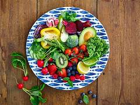
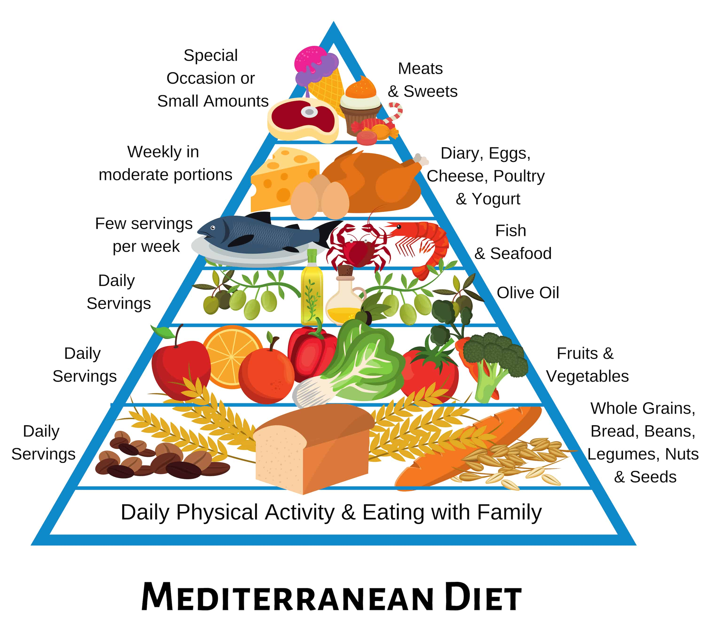

Maintain a Healthy Lifestyle
Limit alcohol consumption. It’s safest not to drink alcohol. Women should have no more than one drink a day.
Stay at a healthy weight. Being overweight increases the risk of breast cancer. A balanced diet and regular exercise help maintain a healthy weight.
Get physically active. Aim for at least 150 minutes of moderate aerobic activity or 75 minutes of vigorous exercise weekly.
Breastfeeding and Hormone Control
Breastfeeding reduces breast cancer risk. The longer you breastfeed, the greater the protective effect.
Limit hormone therapy after menopause. Estrogen and progestin hormone therapy can increase the risk of breast cancer. Discuss alternatives with a healthcare professional.
Quit smoking. Tobacco use is linked to an increased risk of several cancers, including breast cancer.

Diet and Nutrition
A Mediterranean diet may lower breast cancer risk. This diet focuses on plant-based foods, whole grains, nuts, and healthy fats.
Eat more vegetables, fruits, and lean proteins while reducing processed foods and red meats.
Drink plenty of water and stay hydrated to support overall health.
Regular Screenings and Awareness
Early detection is crucial in the fight against breast cancer. Regular mammograms and self-examinations help identify abnormalities early.
Know your family history. If there’s a history of breast cancer in your family, consider genetic counseling.
Schedule routine check-ups and consult a doctor for any unusual symptoms.